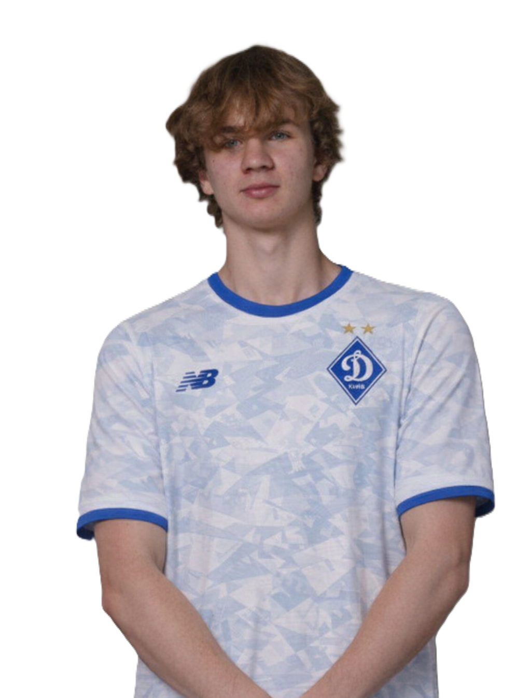

Ігор Берека — технічний та швидкий вінгер, який активно працює на фланзі. Володіє хорошим дриблінгом, різким першим кроком і вміє створювати моменти завдяки індивідуальним діям. Часто загострює гру та допомагає команді в атаці.
